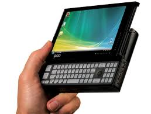

Important point
Types Of Computer
Computers are classified in different types on the basic of size, tasks and brand. some of the computer are explained below:
Super Computer
Supercomputer is a broad term for one of the fastest computers currently available. Supercomputers are very expensive and are employed for specialized applications that require immense amounts of mathematical calculations (number crunching). For example, weather forecasting requires a supercomputer. Other uses of supercomputers scientific simulations, (animated) graphics, fluid dynamic calculations, nuclear energy research, electronic design, and analysis of geological data (e.g. in petrochemical prospecting). Perhaps the best known supercomputer manufacturer is Cray Research.
Mainframe Computer
Mainframe was a term originally referring to the cabinet containing the central processor unit or "main frame" of a room-filling Stone Age batch machine. After the emergence of smaller "minicomputer" designs in the early 1970s, the traditional big iron machines were described as "mainframe computers" and eventually just as mainframes. Nowadays a Mainframe is a very large and expensive computer capable of supporting hundreds, or even thousands, of users simultaneously. The chief difference between a supercomputer and a mainframe is that a supercomputer channels all its power into executing a few programs as fast as possible, whereas a mainframe uses its power to execute many programs concurrently. In some ways, mainframes are more powerful than supercomputers because they support more simultaneous programs. But supercomputers can execute a single program faster than a mainframe. The distinction between small mainframes and minicomputers is vague, depending really on how the manufacturer wants to market its machines.
Mini Computer
It is a midsize computer. In the past decade, the distinction between large minicomputers and small mainframes has blurred, however, as has the distinction between small minicomputers and workstations. But in general, a minicomputer is a multiprocessing system capable of supporting from up to 200 users simultaneously.
Micro Computer
Microcomputer, an electronic device with a microprocessor as its central processing unit (CPU). Microcomputer was formerly a commonly used term for personal computers, particularly any of a class of small digital computers whose CPU is contained on a single integrated semiconductor chip. Thus, a microcomputer uses a single microprocessor for its CPU, which performs all logic and arithmetic operations. The system also contains a number of associated semiconductor chips that serve as the main memory for storing program instructions and data and as interfaces for exchanging data of this sort with peripheral equipment—namely, input/output devices (e.g., keyboard, video display, and printer) and auxiliary storage units. Smaller microcomputers first marketed in the 1970s contain a single chip on which all CPU, memory, and interface circuits are integrated.
Types Personal Computer
Actual personal computers can be generally classified by size and chassis / case. The chassis or case is the metal frame that serves as the structural support for electronic components. Every computer system requires at least one chassis to house the circuit boards and wiring. The chassis also contains slots for expansion boards. If you want to insert more boards than there are slots, you will need an expansion chassis, which provides additional slots. There are two basic flavors of chassis designs–desktop models and tower models–but there are many variations on these two basic types. Then come the portable computers that are computers small enough to carry. Portable computers include notebook and subnotebook computers, hand-held computers, palmtops, and PDAs.
Tower Model
The term refers to a computer in which the power supply, motherboard, and mass storage devices are stacked on top of each other in a cabinet. This is in contrast to desktop models, in which these components are housed in a more compact box. The main advantage of tower models is that there are fewer space constraints, which makes installation of additional storage devices easier.
Desktop Model
A computer designed to fit comfortably on top of a desk, typically with the monitor sitting on top of the computer. Desktop model computers are broad and low, whereas tower model computers are narrow and tall. Because of their shape, desktop model computers are generally limited to three internal mass storage devices. Desktop models designed to be very small are sometimes referred to as slimline models.
Notebook Computer
An extremely lightweight personal computer. Notebook computers typically weigh less than 6 pounds and are small enough to fit easily in a briefcase. Aside from size, the principal difference between a notebook computer and a personal computer is the display screen. Notebook computers use a variety of techniques, known as flat-panel technologies, to produce a lightweight and non-bulky display screen. The quality of notebook display screens varies considerably. In terms of computing power, modern notebook computers are nearly equivalent to personal computers. They have the same CPUs, memory capacity, and disk drives. However, all this power in a small package is expensive. Notebook computers cost about twice as much as equivalent regular-sized computers. Notebook computers come with battery packs that enable you to run them without plugging them in. However, the batteries need to be recharged every few hours.
laptop Computer

A small, portable computer -- small enough that it can sit on your lap. Nowadays, laptop computers are more frequently called notebook computers.
Subnotebook Computer
A portable computer that is slightly lighter and smaller than a full-sized notebook computer. Typically, subnotebook computers have a smaller keyboard and screen, but are otherwise equivalent to notebook computers.
Hand-held Computer
A portable computer that is small enough to be held in one’s hand. Although extremely convenient to carry, handheld computers have not replaced notebook computers because of their small keyboards and screens. The most popular hand-held computers are those that are specifically designed to provide PIM (personal information manager) functions, such as a calendar and address book. Some manufacturers are trying to solve the small keyboard problem by replacing the keyboard with an electronic pen. However, these pen-based devices rely on handwriting recognition technologies, which are still in their infancy. Hand-held computers are also called PDAs, palmtops and pocket computers.
Plamtop
A small computer that literally fits in your palm. Compared to full-size computers, palmtops are severely limited, but they are practical for certain functions such as phone books and calendars. Palmtops that use a pen rather than a keyboard for input are often called hand-held computers or PDAs. Because of their small size, most palmtop computers do not include disk drives. However, many contain PCMCIA slots in which you can insert disk drives, modems, memory, and other devices. Palmtops are also called PDAs, hand-held computers and pocket computers.
PDA
Short for personal digital assistant, a handheld device that combines computing, telephone/fax, and networking features. A typical PDA can function as a cellular phone, fax sender, and personal organizer. Unlike portable computers, most PDAs are pen-based, using a stylus rather than a keyboard for input. This means that they also incorporate handwriting recognition features. Some PDAs can also react to voice input by using voice recognition technologies. The field of PDA was pioneered by Apple Computer, which introduced the Newton MessagePad in 1993. Shortly thereafter, several other manufacturers offered similar products. To date, PDAs have had only modest success in the marketplace, due to their high price tags and limited applications. However, many experts believe that PDAs will eventually become common gadgets.PDAs are also called palmtops, hand-held computers and pocket computers.
PDA
Short for personal digital assistant, a handheld device that combines computing, telephone/fax, and networking features. A typical PDA can function as a cellular phone, fax sender, and personal organizer. Unlike portable computers, most PDAs are pen-based, using a stylus rather than a keyboard for input. This means that they also incorporate handwriting recognition features. Some PDAs can also react to voice input by using voice recognition technologies. The field of PDA was pioneered by Apple Computer, which introduced the Newton MessagePad in 1993. Shortly thereafter, several other manufacturers offered similar products. To date, PDAs have had only modest success in the marketplace, due to their high price tags and limited applications. However, many experts believe that PDAs will eventually become common gadgets. PDAs are also called palmtops, hand-held computers and pocket computers.